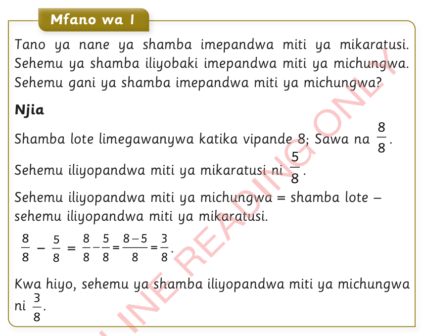
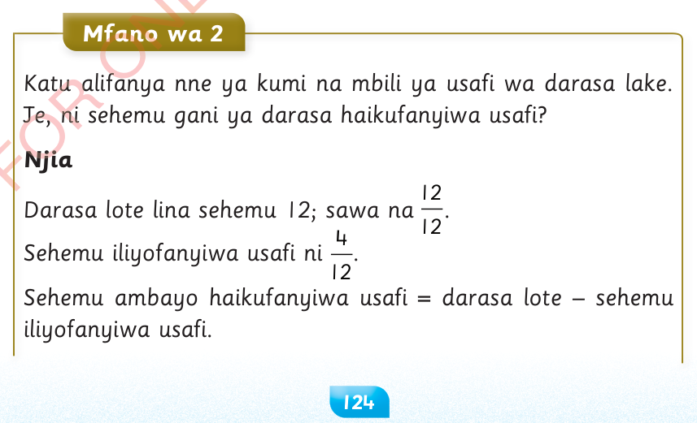

Mafumbo yenye dhana ya kutoa sehemu

Mfano wa 1
Tano ya nane ya shamba imepandwa miti ya mikaratusi.Sehemu ya shamba iliyobaki imepandwa miti ya michungwa.Sehemu gani ya shamba imepandwa miti ya michungwa?
Njia
Shamba lote limegawanywa katika vipande 8; Sawa na
Sehemu iliyopandwa miti ya mikaratusi ni
Sehemu iliyopandwa miti ya michungwa = shamba lote – sehemu iliyopandwa miti ya mikaratusi.
Kwa hiyo, sehemu ya shamba iliyopandwa miti ya michungwa ni

Mfano wa 2
Katu alifanya nne ya kumi na mbili ya usafi wa darasa lake.Je, ni sehemu gani ya darasa haikufanyiwa usafi?
Njia
Darasa lote lina sehemu 12; sawa na
Sehemu iliyofanyiwa usafi ni
Sehemu ambayo haikufanyiwa usafi = darasa lote – sehemu iliyofanyiwa usafi.